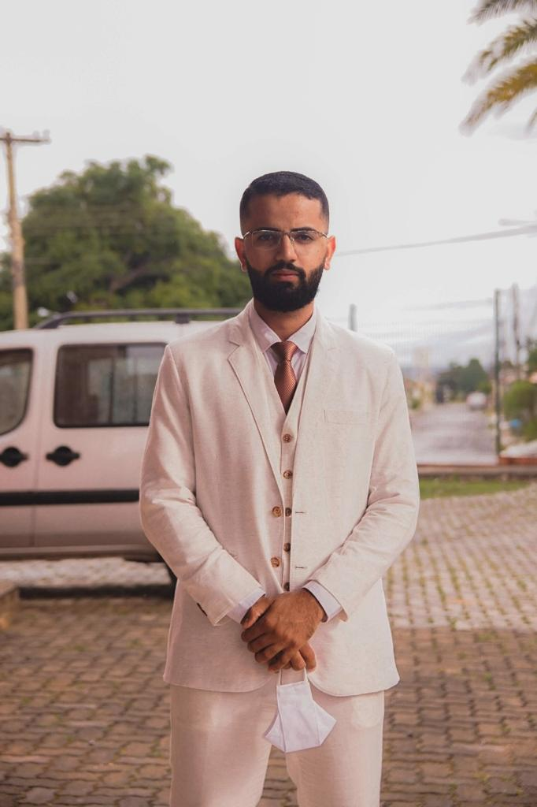

Leveza & Sofisticação
Ternos Beges
A escolha perfeita para celebrações diurnas, ao ar livre, no campo ou na praia. Descubra tons que unem o frescor visual ao corte impecável da alta alfaiataria.

Bege B
Corte slim moderno em tom areia clássico. Excelente caimento e versatilidade para eventos ao pôr do sol.
Consultar Disponibilidade
Raffer Bege
Assinado pela renomada grife Raffer. Acabamento premium com fios selecionados para um caimento estruturado de alto padrão.
Consultar Disponibilidade
Caqui
Tom levemente mais encorpado e sóbrio, ideal para padrinhos e convidados que buscam elegância discreta de dia.
Consultar Disponibilidade
Bege FD
Tom levemente mais encorpado e sóbrio, ideal para padrinhos e convidados que buscam elegância discreta de dia.
Consultar Disponibilidade
Bege Linho
A essência do estilo tropical chique. Tecido com textura rústica nobre, fresco e extremamente sofisticado.
Consultar Disponibilidade